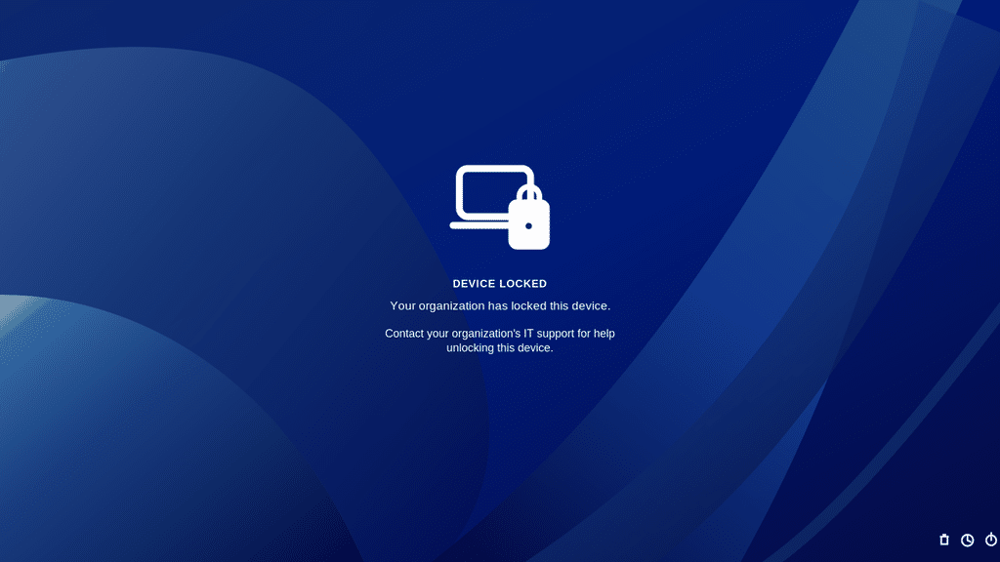
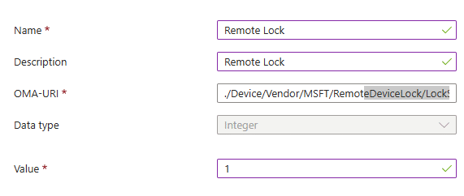
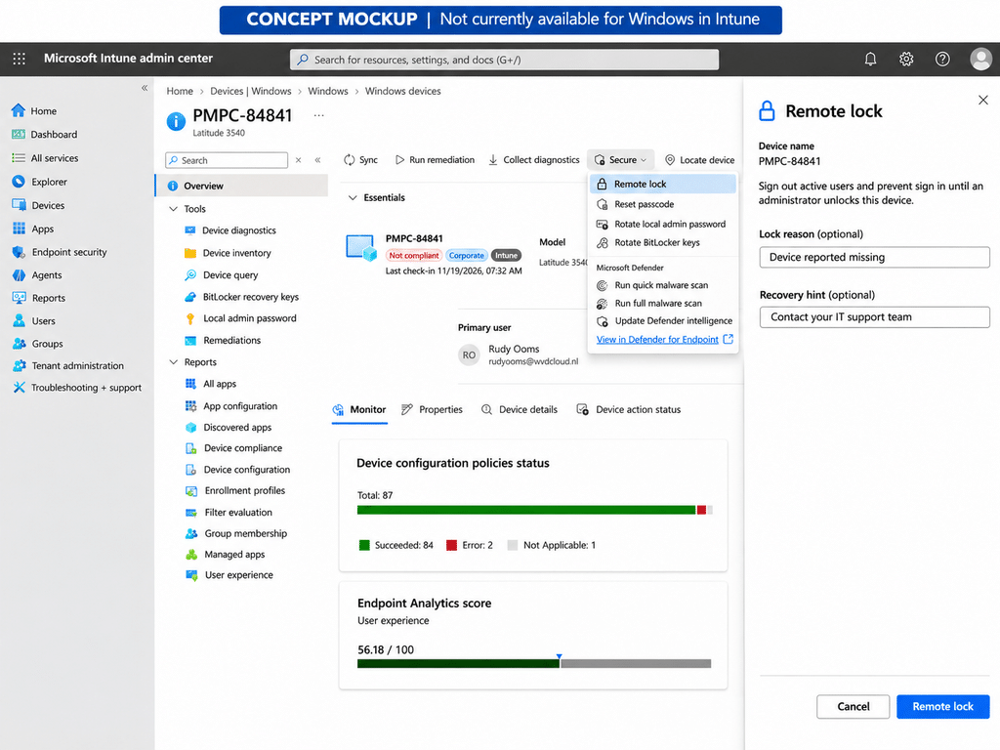
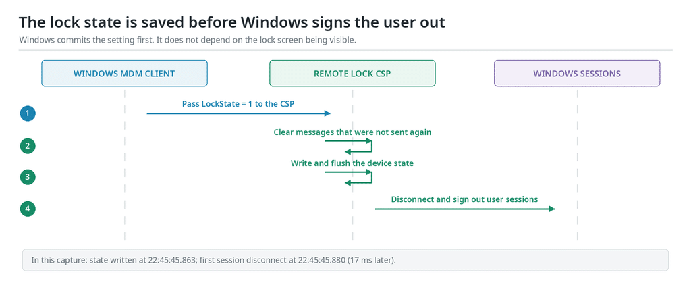
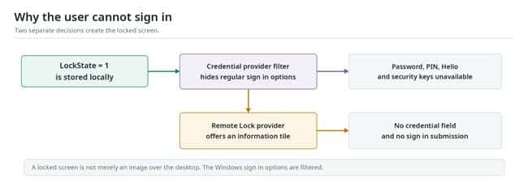

A Windows laptop goes missing. You place it in a Remote Lock group in Intune. When the Remote Lock policy reaches the device, Windows signs out the user and replaces the ordinary sign-in options with a Device locked message.
That sounds simple, but two important things are happening. First, Windows stores the lock state and ends the active sessions. Then a separate part of Windows checks that state whenever the sign-in screen is built. This is why the lock can remain in place even when the device restarts or loses its internet connection.
So what actually happens between assigning the policy in Intune and seeing the locked screen?
How Remote Lock For Windows Devices Looks
Microsoft’s default Remote Lock screen gives the user an explanation, but no way to sign in. The example below recreates the layout of the official Windows screen so the message is readable.


The important part is what is missing. This is a new secure sign-in screen with only an informational tile, not a warning placed over the old desktop. The user cannot choose another account or switch to password, PIN, or Windows Hello. The optional LockReason and RecoveryHint settings replace the default explanatory and support text.
The old desktop session has been signed out. When an administrator unlocks the device, the user signs in to a new session. Any unsaved work in apps that were closed during sign-out may be lost.
What Remote Lock for Windows Devices does
Remote Lock is intended for managed devices that are lost, stolen or need to be taken out of use temporarily. It blocks normal interactive sign in without wiping Windows or deleting the user’s files. It also leaves the device enrolled and available for management.
This is not an account disable action. The user’s identity still works elsewhere, and Remote Lock does not replace BitLocker, Secure Boot or network isolation. It controls who can sign in to this Windows installation.
Why not just Remote wipe the device?
If a Windows device is lost or stolen, the obvious reaction is Remote Wipe. And if the goal is to remove the data and reset the device completely, that can still be the right choice.
But a Remote Wipe still depends on Windows being able to complete the reset successfully.
I have already run into situations where the wipe was delivered but Windows could not finish the reset. In one case, WinRE could not access the disk correctly because the required storage driver was missing. In another, the reset failed with 0x800f0991 and the device could remain usable even though its Intune state had already changed. I covered those cases in Intune Remote Wipe: There was a problem resetting your PC and Intune Remote Wipe ending up in There was a problem resetting your PC 0x800f0991.
Simply deleting the Intune device object is not the same thing as securing the device either. In an older Windows test, deleting the Intune object removed the BitLocker policy and BitLocker protection became suspended. That was observed in that specific setup and should not be treated as a promise about every current Windows build, but it shows why removing the management relationship is not a replacement for locking or wiping. I documented that behavior in Forgive Us Our BitLocker suspension.
Remote Lock gives us a less destructive first step. The device stays enrolled, BitLocker remains the protection for data at rest, and Intune can still manage the device. Windows blocks normal interactive sign in while you decide what should happen next.
When should you use Remote Lock?
Remote Lock makes the most sense when you still want to keep control of the device instead of immediately destroying its state.
Lost but potentially recoverable. A laptop left at an airport, hotel, taxi or office is a good example. Lock it first, keep it managed and wait to see if it comes back.
Stolen but still reachable. If the device is online or reconnects, Remote Lock can block normal sign in while IT investigates and decides whether a wipe is really needed.
Offboarded employee who still has the laptop. Remote Lock gives IT another control while the device is being returned, without immediately resetting Windows.
You need time before making a destructive decision. Remote Lock keeps the management relationship intact while you investigate, locate the device or prepare the next action.
Remote Lock is not enough in every situation.
The device never comes online. Intune still has to deliver the new lock state. If a stolen device is immediately kept offline, a new Remote Lock command cannot reach it. Once the lock has been applied, Windows can enforce it locally.
The device is permanently gone and the goal is data removal. Trust on Bitlocker????
You are protecting the disk against offline access. That remains a BitLocker and Secure Boot problem. Remote Lock protects the interactive Windows sign in experience; it does not replace data at rest protection.
Someone has full physical control of the hardware. Remote Lock does not stop someone from replacing or wiping the storage and reinstalling Windows. It is an access control for the installed Windows environment, not an anti theft mechanism.
You are considering broad production deployment today. Remote Lock is still a preview feature in this article. I would test it first and wait for Microsoft to move the feature forward before treating it as a production standard.
Lost device → Remote Lock → investigate or recover → Remote Unlock or Wipe
That is the real value of Remote Lock. It gives IT another option between doing nothing and immediately performing a destructive wipe.
First, configure the Remote Lock policy in Intune
In the current preview, Remote Lock is configured through a custom Windows configuration profile, rather than a dedicated Lock button. Create one profile that sets LockState to 1 and assign it to a device group for locked devices. Create a second profile with LockState set to 0 for unlocking. Moving the device between the appropriate groups changes the requested state.
At the time of writing, this preview applies to Windows 11 Pro, Enterprise and Education devices that are Microsoft Entra joined, hybrid joined or MDM-enrolled. Microsoft introduced it in Windows 11 Insider Experimental (Future Platforms) build 29708.1003 and is enabling it through a gradual Controlled Feature Rollout. A qualifying edition and enrollment state do not guarantee that the CSP is present: a production build, or an Experimental device outside the rollout, can still reject the RemoteDeviceLock URI.
The main OMA URI is: ./Device/Vendor/MSFT/RemoteDeviceLock/LockState


| Setting | Type | What it controls |
| LockState | Integer | 1 locks the device. 0 unlocks it. |
| LockReason | String | Optional message explaining why the device was locked. |
| RecoveryHint | String | Optional information telling the user who to contact. |
| Status | Read only integer | 0 unlocked, 1 locked, 2 pending, 3 error. |
LockReason supports up to 1,024 characters, and RecoveryHint supports up to 256. If the optional messages are not included in a new lock request, Windows can remove the older messages instead of showing information left over from a previous lock.
Two Remote Lock profiles are required for now…?
Use a custom Windows profile for the lock and a separate custom profile for the unlock. Both use the same LockState OMA URI. The only required difference is the integer value: 1 to lock and 0 to unlock.
Assign the lock profile to a dedicated lock device group. When it is safe to restore access, remove the device from that group and add it to the unlock group. Avoid assigning both profiles to the same device. A profile assignment is only the request; Windows must receive and process it before the screen changes.
A native Windows lock and unlock action in the Intune console would make this workflow much simpler. The Remote lock entry that currently appears under Secure uses the existing Graph remoteLock action for supported Android and Apple platforms, so it remains disabled on Windows, including on the 29708.1003 test VM. Windows administrators must currently maintain the two custom profiles and move devices between the lock and unlock groups.
Configuration example: custom profile, OMA URI LockState, Integer value 1. For the unlock profile, use value 0.
| Setting | Lock profile | Unlock profile |
| Name | Remote Lock ON | Remote Lock OFF |
| LockState value | 1 | 0 |
| Data type | Integer | Integer |
| Group | Lock devices | Unlock devices |
Why isn’t Remote Lock an on-demand device action?
There is one part of the current preview I would like to see changed. If a Windows laptop is reported missing, I do not want to create or move devices between configuration profile assignments just to lock it. Remote Lock is something an administrator needs to do on demand.
Intune already has a Remote lock device action for supported Android devices. An administrator selects a device, chooses Secure > Remote lock and confirms the request. I think Windows should offer the same straightforward starting point from the device overview, with both Remote lock and Remote unlock available as administrative actions.
This is what I imagine the Windows device page could look like. An administrator would choose Remote lock, optionally enter a reason and recovery instructions, and confirm. Intune would send the lock request to the device and show whether the action is pending, completed, or failed. There would be no need to manage separate lock and unlock groups for a one-time response.


There is an important difference from Android. On supported Android devices, the user can normally unlock Remote lock with their existing PIN or passcode. Windows Remote Lock blocks the sign in options until an administrator sends an unlock request. A Windows device action would need to preserve that behaviour, not offer a local PIN unlock.
For now, the supported Windows preview still uses custom OMA URI profiles with LockState = 1 to lock and LockState = 0 to unlock. The image above is a suggestion for a simpler administrative experience, not a current portal screenshot or a promise of a future release.
From Intune assignment to a Remote Lock screen
The complete process is easier to understand when each part has its own lane. The first part is management traffic. Most of what follows happens locally in Windows.

1. Intune delivers the lock instruction
Assigning the profile does not instantly change the screen. Windows still needs to receive the setting. A push notification can wake device management, after which the Windows MDM client starts an OMA DM check in and retrieves the policy. I explained how this push notification wakes up Windows and starts an MDM session in my earlier blog, What Really Happens When You Press Remote Sync in Intune.
The important detail is that the push is only a wake-up signal. It does not lock the user session on its own. The MDM client obtains the new LockState value and passes it to the Windows Remote Device Lock configuration service provider, or CSP.
In the supplied capture, one earlier management session only read the current state. A later push started the session that actually applied the lock. A successful status read is not proof that Windows has locked the device. That happens when Windows saves the state and begins signing out users.
2. Windows saves the lock before signing the user out
When the CSP receives LockState = 1, it processes the current lock message, saves the state in the local Windows registry, and flushes that change to disk. Only then does Windows start disconnecting and signing out interactive user sessions.
The state is stored under: HKLM\SOFTWARE\Microsoft\Windows\CurrentVersion\RemoteDeviceLock


On the device used for this article, the registry write occurred at 22:45:45.863. The key was flushed about ten milliseconds later. Windows started disconnecting the user session at 22:45:45.880, just 17 milliseconds after the write.
That is when disconnection began, not when the entire sign-out finished. In this capture, the user session finished logging off at 22:46:05. This distinction matters when you compare the management timeline with the Windows event log.
Anything running in that interactive session will be closed as part of the sign-out. Remote Lock is not a pause button that preserves an open desktop for later.
3. Windows builds a new secure sign-in screen
After disconnecting the current session, Windows creates a new secure sign in environment. Winlogon starts LogonUI, the same Windows component responsible for the regular sign in screen.
LogonUI checks which credential providers are available. Normally, those providers give you options such as password, PIN, Windows Hello, security key, or smart card. Remote Lock adds a dedicated provider and filter to this process.

The filter reads the LockState value that the CSP saved earlier. When it finds the device locked, it hides the normal authentication providers and allows the Remote Lock information tile to be displayed.
That means the CSP doesn’t keep a window open and doesn’t have to stay connected to Intune. LogonUI makes its own decision using the state already stored on the device.
4. Why the user cannot just choose another sign-in method
A locked device does not simply cover the desktop with a warning. Windows removes the usable sign in choices from the secure screen. The remaining Device locked tile is informational. It can display the reason and recovery hint, but it has no username box, password box, PIN field or submit action.


This explains why changing from password to PIN, Windows Hello or a security key does not help. Those options are not offered while the locked state is active. A local administrator tile is not a supported way around it either.
5. Why the lock survives a restart or lost connection
The decisive step happened earlier, when Windows wrote and flushed LockState = 1. That value is stored locally. When LogonUI starts again, including after a reboot, it can read the existing state and apply the same restriction.

This is also why losing the management connection after the device has locked is inconvenient. The device does not automatically unlock. It needs another successful management session to receive the unlock state.
There is a small difference between a request that has not arrived and a request that has already been committed. If management never delivers LockState = 1, nothing new is locked. If the state is already saved, a later network problem does not reverse it.
6. Unlocking reverses the state, not the old user session
Unlocking uses the same management path. Intune delivers LockState = 0, Windows stores the unlocked state, and the secure sign-in screen refreshes. The normal credential providers can then appear again.

The user still has to sign in again. Windows does not restore the interactive session that Remote Lock previously signed out.
Do not rely on simply removing the LockState = 1 assignment to unlock a device. The preview documentation describes applying the explicit value 0 through a separate unlock profile.
What the timing looked like on one Windows device
These are selected timestamps from the supplied Windows 11 Enterprise Insider Preview build 29708.1003 investigation. They describe one device and are not a guaranteed delivery time or service level.
| Time | What happened |
| 22:45:27.433 | Push notification arrived for the lock side session. |
| 22:45:45.863 | Windows wrote the RemoteDeviceLock state. |
| 22:45:45.873 | Windows flushed the saved state. |
| 22:45:45.880 | The existing interactive session started disconnecting. |
| 22:45:48.326 | A new LogonUI process started. |
| 22:45:50.230 | LogonUI loaded the Remote Lock credential provider. |
| 22:46:05.078 | The previous user session finished logging off. |
From the captured push to the local state write took about 18.4 seconds on this device. LogonUI loaded the Remote Lock provider about 22.8 seconds after the push. These values exclude any delay before the push and are not a guarantee of overall policy delivery speed. The new sign-in environment was being prepared before the old session finished logging off; the exact first visible locked frame was not captured.
Of course, how quickly Windows starts processing a push notification also matters. Microsoft has improved the Windows MDM notification path, which I covered in Intune Device Actions: Microsoft Brings Back Instant Remote Actions.
What to check when Remote Lock does not work
Start with policy delivery. Confirm that the device is in the intended assignment group and that the custom profile contains the correct device OMA URI and integer value. The device must check in to receive it.
Next, check Windows device management events to see whether the setting was processed successfully. If the policy arrived but the device still shows normal sign in options, the saved state and the new LogonUI session are the next useful places to investigate.
The read-only Status node reports Windows effective state: 0 unlocked, 1 locked, 2 pending, and 3 error. This is different from whether Intune reports that a profile has been assigned. Finally, a locked device cannot be unlocked through normal user or local administrator sign in. The unlock profile must be applied to Windows through management.
Remote Lock is not a replacement for other security controls
Remote Lock closes interactive user sessions, so unsaved work in those apps can be lost. It does not wipe user files, revoke a Microsoft Entra account, isolate the network or stop alternate boot and recovery paths. Its purpose is to prevent normal interactive sign in to the installed Windows environment. Keep BitLocker and Secure Boot enabled, and use separate identity and device security actions when required.
Executive summary
Remote Lock is most useful when you still want control of the device. It gives IT a middle step between doing nothing and immediately wiping Windows.
1: If a laptop is lost but might be recovered, stolen but still reachable, or still with an offboarded employee, locking it first lets you block normal sign in while keeping the device enrolled and manageable.
2:If the device is permanently gone and the goal is to remove the data, Remote Wipe may still be the right choice
3:If the device never reconnects after it disappears, neither a new lock nor a new wipe can be delivered. Remote Lock also does not replace BitLocker or Secure Boot for offline and physical access.
Once the lock reaches Windows, the story changes. Windows stores the state locally, signs out the active user, and LogonUI removes the normal credential choices. That separation is why the lock can survive a restart and continue working even without a continuous Intune connection.
Today the preview still uses custom configuration profiles. For an incident response feature like this, I think the final experience should be an on demand Remote lock and Remote unlock action directly on the Windows device page in Intune.
Lost device → Remote Lock → investigate or recover → Remote Unlock or Wipe
The behaviour and timings described here come from a Windows 11 Insider Preview device. Remote Lock was still in preview when this article was written, so exact Windows internals and the final Intune experience can change between builds.